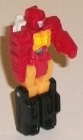 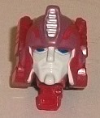
Size : Titan Master
Difficulty of Transformation : Very Easy
Color Scheme : Red, light orange, black, and some silver, orangish yellow, dark blue, dark dull violet, and pale glossy bluish gray
Individual Rating : 4.0
Allegiances
: Autobots
Set Price
: $100 U.S.
(NOTE: Because this set is mostly composed
of repaints, this is not a full-blown review. This mainly covers any changes
made to the set and the color scheme, and merely compares it to the original
versions of these molds. For a review on Titans Return Blurr w/ Hyperfire--
the mold used for Nautica w/ Parsec-- go
here
.
For a review on Titans Return voyager Optimus Prime w/ Diac-- the mold
used for Laser Prime w/ Refractor-- go
here
.
For a review on Six Shot w/ Revolver-- the mold used for Quickswitch w/
Dynamus-- go
here
.)
 Rodimus
Prime (Titan Master)
Rodimus
Prime (Titan Master)
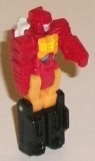
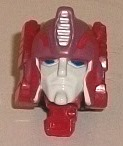
Size
: Titan Master
Difficulty of Transformation
: Very
Easy
Color Scheme
: Red, light orange,
black, and some silver, orangish yellow, dark blue, dark dull violet, and
pale glossy bluish gray
Individual Rating
: 4.0
Rodimus Prime at a first glance may LOOK like a new Titan Master mold, but he actually uses the base mold of Ptero -- it's just not obvious because Ptero has no paint in Titan Master mode, whereas Rodimus Prime a pretty decent amount! In robot mode he's painted quite a bit like Rodimus' traditional colors, with some red for the arms, body and head; light orange on the upper legs; and black on the lower legs. He's also got a mix of light orange and orangish yellow paint on the chest to give him some "flamey" action there. On his face, he's got some pale gray to help highlight the visor and face. Honestly except for the face visor, he fits Rodimus pretty well (in Titan Master proportions of course), despite no mold changes made to the details in this mode. In head mode, Rodimus Prime looks... okay. This is where the new mold change comes in, as obviously compared to Ptero he has a completely new face-- not only that, but the face and body of the Titan Master's robot mode is made of diecast! I guess this is supposed to make up for him not having a little set like the mass-release Titan Master toys, but... it really doesn't. Anyways, the actual mold details on Rodimus Prime's head are pretty good-- he's got the round head with a vent in the center and a fairly stern-looking "normal" face underneath that round helmet. However, the colors are where this face falls a bit flat. The glossy bluish gray used for the face is very sloppily applied (and this isn't just on mine, this is pretty universal) and just looks bad. Additionally, there's some dark dull violet on his forehead details and on his "ear bulbs" on the sides, but it's so dull and close to the red it doesn't stick out much-- it should have been a bit brighter. He also has silver paint on his forehead vent and dark blue on the eyes, both of which look nice. The color mismatch from any remotely side-on view is a bit off, though-- the painted red on the front is a bit different of a shade than the red plastic made up of the arms on the middle, and then the back of course is the robot mode legs, which are black, so they don't "mesh" very well (plus the arms stick out from the sides of Rodimus' round face a bit obviously).
 Fastclash
Fastclash
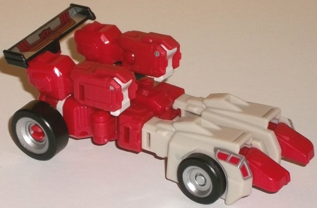
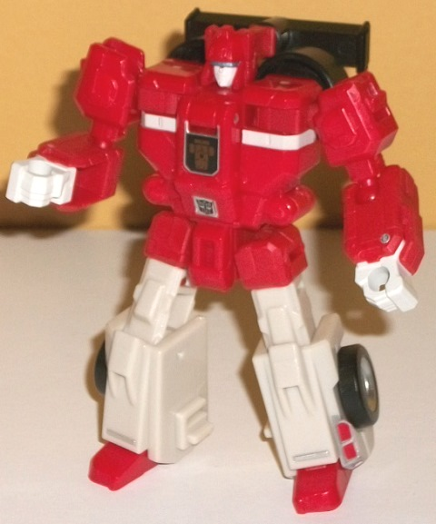
Size
: Legends
Difficulty of Transformation
: Very
Easy
Color Scheme
: Moderately dark milky
red, brownish off-white, and some black, light metallic silvery blue, and
silver
Individual Rating
: 5.5
"Fastclash" is the new
trademark-friendly name for G1 "Fastlane", who is one of the Autobot "clones".
He's the only completely new mold in the set, and the whole gimmick of
the clones is that they have nearly identical robot modes, but different
alternate modes. Because of this and because nearly all of my comments
on the vehicle mode are in relation to the robot mode, as opposed to most
reviews I'm going to start with the robot mode first. In robot mode, Fastclash
looks pretty darned good, albeit a bit generic (which is certainly a side
effect of using this base mold to have two different alt modes). His chest
is a bit wide compared to his head, but otherwise the proportions are pretty
spot-on. As far as extras, the rear two wheels and the spoiler are behind
his head and upper back. I don't mind the tires as they fit in with his
general silhouette pretty well and actually make him look a bit "buff",
but that spoiler sticking out behind his head just doesn't blend in with
anything and just looks baaaad. Also it pretty much makes his neck articulation
nonexistent, despite the fact that it can rotate 360 degrees (and in fact
this is required for the transformation). The mold detailing is all fairly
generic robot details-- again though, this fits the whole "clone" gimmick--
but it's all still pretty decent. He has little wheel-like details on his
abs, a flat center bit to his chest with some angular lines on the sides
of the chest, and a couple of raised vent-like details on the shoulders.
On his lower legs he interestingly has little windows molded into them,
which I guess is used for his race car mode but proportionally they're
waaaay off and are the wrong way for race car mode, so this is definitely
an odd side effect of him forming another clone mold. Even for a futuristic
race car assuming you have a contained multi-window cockpit, a race car
is not THAT big for the cockpit to be that small. For colors, he's a fairly
dark red mostly on the top, and a brownish-white on the legs and face,
along with a bit on the fists and a stripe across the chest. The main two
colors contrast against each other pretty decently, but the white is an
ugly shade given that bit of brown in it-- a straight white would've worked
better. Of course there's also some black on the wheels and the spoiler,
which contrasts well against the white, but the red is a bit too dark for
it to contrast all that well against the latter. As for other paint apps,
there's some light metallic silvery blue on the visor, silver on the wheel
hubs and along the cockpit windows near the bottom, and some silver on
the center of the spoiler. There's also a simplified "race car from a top-down
view" symbol on his chest to help differentiate him from his clone-- y'know,
if you somehow miss the wheels and the honkin' spoiler behind his head.
For articulation, Fastclash can move at the shoulders at two points, elbows,
inwards at the wrists, and at the hips (at two points), knees, and slightly
back-and-forth at the ankles, so he's pretty articulated. His hips can
also split apart completely into two halves, but this is a side effect
of the other clone forming a jet-- this articulation has no use in either
mode or used during the transformation on this toy.
Fastclash's transformation
to race car mode is really easy. You just peg the legs together, fold up
the fists and rotate the shoulders forward, and... turn around... the head...
to make the spoiler... and... wait, I'm missing something here. *checks
instructions* *looks at end result* ... *checks instructions again* Really,
Hasbro? REALLY? This is supposed to be a race car? It's got four wheels,
and it's got a spoiler (which admittedly has a nifty "Autobot symbol with
stripes" deco on it). And it's longer horizontally than vertically. That...
that's it. The arms don't even peg together or peg into anything to fit
them in their position, and they don't look like anything other than...
well... collapsed arms. The legs are also just obviously pegged-together
legs, without the upper legs collapsing into the lower legs or anything
that would help solidify the front part of the race car mode. Now, is this
accurate to the G1 toy? Yes. But the G1 toy's alt mode was HORRIBLE, and
this was a perfect opportunity for Hasbro to improve upon it... instead,
nope. Just re-do the same lame, lazy transformation from the original but
with better articulation and proportions in robot mode. Even taking into
account the whole "clone" gimmick and giving it a bit of leeway for it
being a "futuristic" alt mode, this is just sad and a mess. Can I unsee
this mode? Yeah, this is definitely the worst mold out of the four Titans
Return clones.
 Nautica
w/ Parsec
Nautica
w/ Parsec
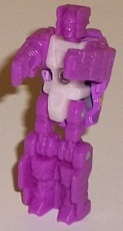
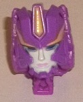
Size
: Deluxe
Difficulty of Transformation
: Medium
Color Scheme
: Violet, light pale
pinkish purple, and some dark glossy navy blue, yellow, transparent dark
blue, light pale gray, light pale pink, dark purple, and glossy purplish
gray
Individual Rating
: 9.4
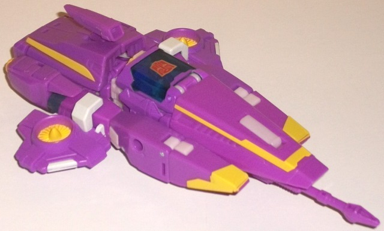
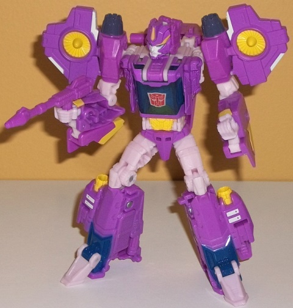
Although Parsec isn't
specifically identified anywhere on the packaging as the name of Nautica's
Titan Master, on a handout Hasbro gave at the following SDCC there was
a list of all the different Titan Masters in the line and their powers,
and through process of elimination Parsec was identified as Nautica's Titan
Master. It's a fitting name, given that Nautica-- a character introduced
in the IDW comics-- is a scientist. Anyways, since this toy is a remold
of Blurr, the Titan Master is a remold of Blurr's Titan Master Hyperfire.
No mold changes have been made to Parsec's robot mode at all, so it looks
like Hyperfire but with sadly no paint at all in robot mode-- just some
pale pinkish purple on the body and some violet on the rest of the figure.
The mold change to Parsec comes with the head mode, which of course has
a new face that's supposed to be Nautica's. As far as having all the necessary
details, they're all here-- she has a yellow "forehead vent" in the middle
and an otherwise fairly round head though angular in its detailing, with
yellow stripes across the sides of the forehead. She has the beginning
of circular bits on the sides of her chin-- given where the arms are, the
circles can't "complete"-- but otherwise they look pretty good. She also
has little "spikes" coming up against her pale gray face, complete with
light pale pink lips and dark blue eyes. The thing is, the proportions
are off here-- her forehead is too large compared to her design in the
comics and her face too small, and her face looks too serious and her eyes
should be more round, to boot. They definitely needed to re-do this facesculpt
some to make it more accurate.
As for the toy of Nautica
overall, her main colors are a medium shade of violet and a very light,
pale pinkish shade of purple, with the latter considerably more visible
in robot mode. They both make for a great overall color scheme, as they
both complement and contrast against each other very nicely. Plus I just
like purple. There's several yellow bits used on her as well-- on the rear
thrusters, the abs, little bits on her lower arms and some lines on the
front sections of the vehicle mode, and on her turbines. If you've been
reading my reviews for a while you know I don't like yellow much when it's
used as a main color, but here it looks excellent, contrasting well against
the various pinkish/purplish shades and providing a "warm" color to offset
the "cool" colors. There's also some blue-- some transparent dark blue
used on her cockpit, and some dark glossy navy blue on her lower legs.
I wish there was just a bit more of it to break up all the purple in vehicle
mode a bit, but overall it's another nice addition as well. There's a few
light gray bits on the sides of her turbines and lower legs, but it's used
so little it doesn't really add anything to the scheme. Same with the bit
of dark glossy purplish gray used for the thrusters on her shoulders in
robot mode.
Beyond just the face
mold, Nautica has another mold change, or rather, addition. She has turbine
pieces added to the sides of her vehicle mode/shoulders, as she IS supposed
to be a submarine, whereas the core mold Blurr is just supposed to be a
futuristic car. It's amazing how much just these pieces added to the vehicle
mode actually make it look like a submarine (though the cockpit should
definitely be bigger and the lines less angular). Still, it's passable.
It does work quite well in robot mode given that this toy was (presumably)
not molded to ever be Nautica. In this mode the toy does a good job, with
most of the major identifying design parts of Nautica-- like the shoulder
turbines and chest-cockpit-- all here.
 Laser
Prime w/ Refractor
Laser
Prime w/ Refractor
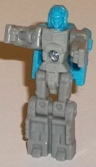
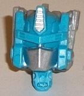
Size
: Voyager
Difficulty of Transformation to Truck
:
Hard
Difficulty of Transformation to Jet
:
Medium
Color Scheme
: Light flat gray, black,
and some red, transparent dark blue, light sky blue, and silver
Individual Rating
: 8.5
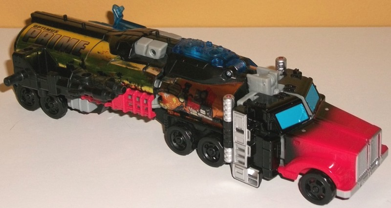
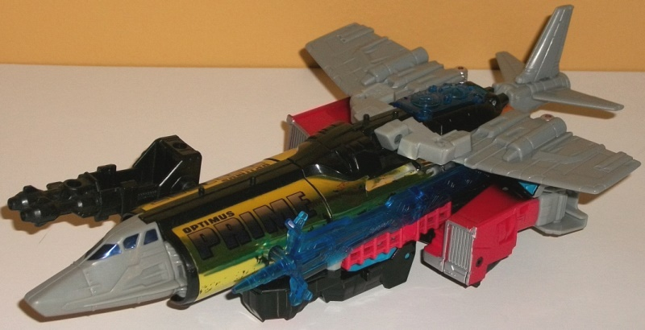
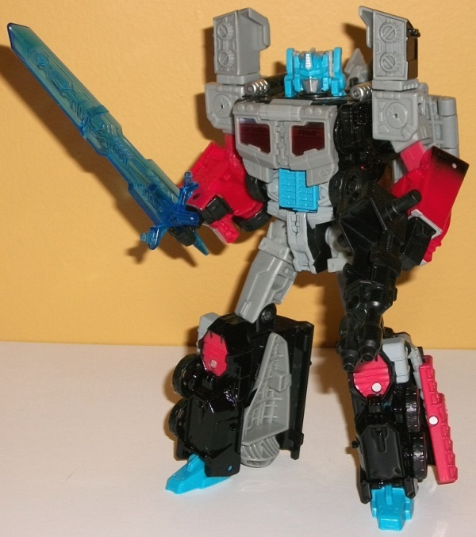
Laser Prime's Titan
Master, according to the aforementioned SDCC list, is named Refractor.
He's the only Titan Master that's a straight redeco of the original version--
Diac-- with no mold changes, even to the face. (This is a Prime, after
all!) Overall, Refractor has a lighter color scheme than Diac. His entire
robot mode is just a light flat gray with no paint apps, though the head
is-- oddly enough-- a light sky blue. It's a pretty weird look with no
paint at all; I understand Refractor isn't the focus here, but at least
a paint app or two would have been much appreciated, here. Refractor's
head mode also has less paint than Diac's, with just some silver on the
middle forehead vent and on the facemask. Everything else is light sky
blue, including the eyes-- though given that Autobot eyes are usually blue,
this isn't really a big deal.
The original voyager
Titans Return version of Optimus Prime was a bit of a callback to G2 "Laser"
Optimus Prime, but this redeco takes things a significant step farther
in terms of the deco. Considerably more of the toy is black now, particularly
in truck mode, where pretty much everything but the nose is black, at least
as far as the base plastic color. The other main color is a light flat
gray, which-- though not particularly exciting-- at least isn't a light
milky gray, so it looks moderately better. The gray is more apparent in
jet mode and especially in robot mode-- the chest, upper arms, stomach,
upper legs, nosecone, and jet wings are the biggest gray parts. That said,
despite these being the two main colors, it's the stickers nad accent colors
that really make this toy, as without them it would be super booooring.
The first significant accent color is-- given that this is an Optimus toy,
after all-- a medium red. This is used mostly on the plastic for the nose
of the truck mode, and I really love the way it "fades" into the black
there-- it really helps add some uniqueness. There's also some red paint
on the side grills and the robot knees. There's also a decent amount of
blue too, with some dark transparent blue used for the cockpit and sword,
while a light sky blue is used for the feet, faux grill-abs, front windows
in the truck mode, and as already discussed much of the head as well. Both
of these colors complement the gray and contrast against the black quite
nicely. There's also some silver on the sides and front of the truck mode,
which looks pretty good. Now, normally I'm opposed to foil stickers as
I think they look cheap and they tend to come off, but by and large they
work on Laser Prime given the toy it's mimicking and the general "early
'90s" feel of them. The most hilarious and largest stickers are, of course,
the huge ones along the sides of the truck mode, where you've got massive
stylized art of Laser Prime shooting his blaster and creating a huge "flame"
deco that goes down the rest of each side of the truck. Because that doesn't
make things obvious enough that this is TOTALLY not a Transformer, "OPTIMUS
PRIME" is in huge font near the back end, just like with the original toy.
There's also G2 Autobot symbols near the bottom of the rear sides of these
huge stickers. That said, cool as they look these tend to crease a bit
around the middle, which is a not a good look. There's also lined red "OPTIMUS
PRIME" stickers along the faux chest windows and blue foil stickers on
the jet cockpit windows. Overall this makes for a pretty nice look, but
I think a bit more effort should have been put into the jet-- the fact
you have these huge wings on the jet mode that don't have any paint and
are just flat gray doesn't look great.
No mold changes have
been made to Laser Prime.
 Quickswitch
w/ Dynamus
Quickswitch
w/ Dynamus
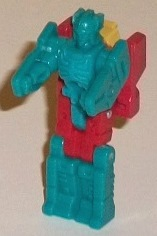
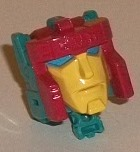
Size
: Leader
Difficulty of Transformations
: Medium
Color Scheme
: Pale light seafoam
green, off-white, moderately dark gray, red, and some transparent pale
blue, light sky blue, yellow, and black
Individual Rating
: 7.9
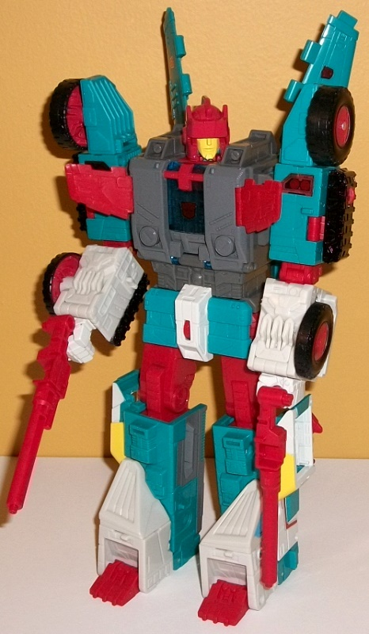
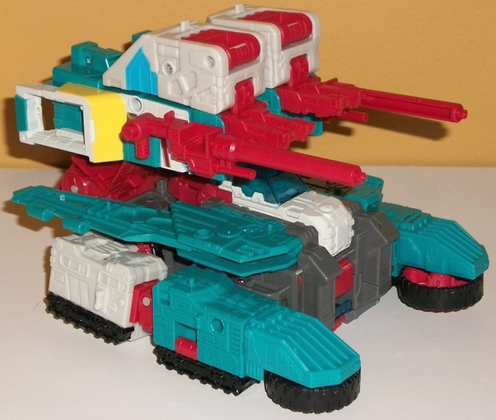
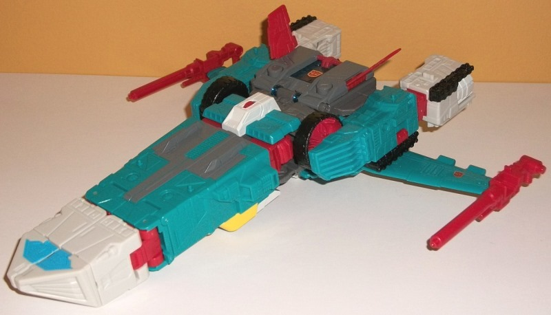
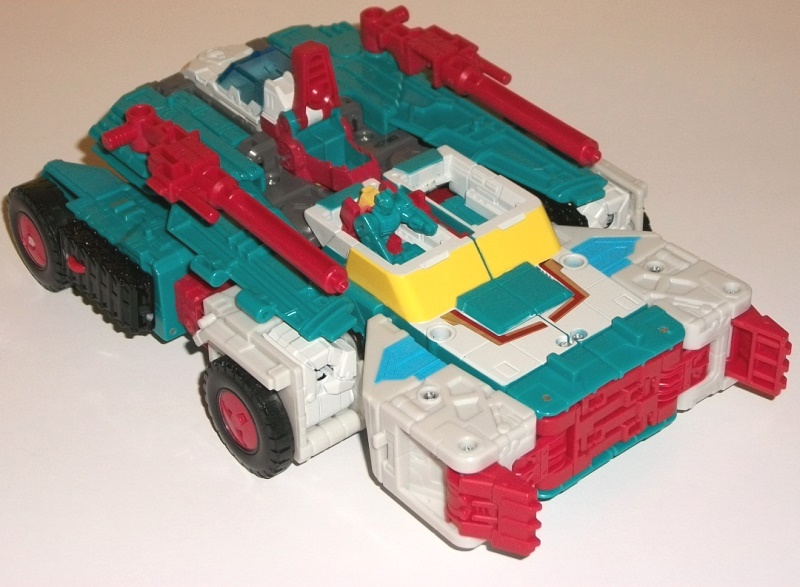
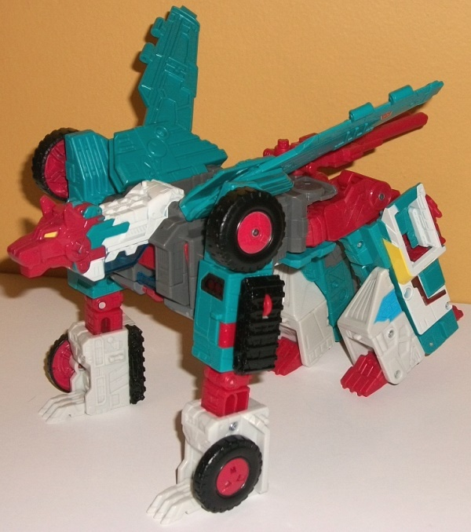
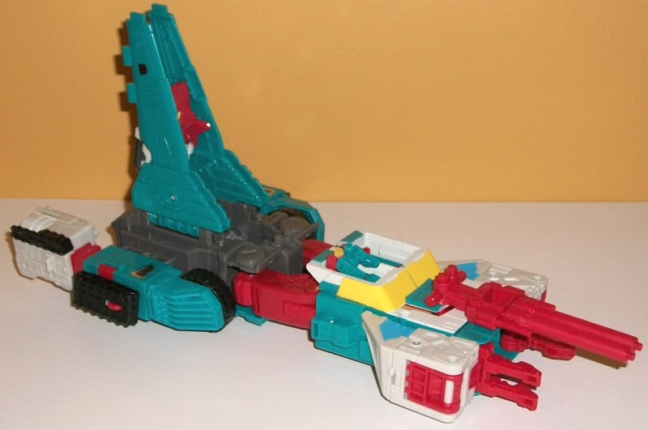
Dynamus is Quickswitch's
Titan Master, and since Quickswitch is a remold of Six Shot, Dyanmus is
a remold of Revolver. In robot mode, there's no visible changes; as with
many Titan Master he's desperately lacking paint as well, as he's almost
entirely that pale light seafoam green, with just a bit of red used for
the upper legs. At least put on some paint on the face or chest or something,
geez. In head mode, we get the only mold change made to Quickswitch when
compared to Six Shot; namely, to mimic his G1 toy Quickswitch has a more
"normal" face, as opposed to Sixshot's faceplated head. There's still similar
"circuitry-interface-like" details along the top of the head since for
a Leader class toy a Titan Master's head mode just isn't large enough.
However, as for the face itself, it's got great mold detailing, with a
fairly neutral expression and a slight little chin strap on the bottom.
The face itself is painted yellow, with red "trim" for the helmet on the
sides and a nice light sky blue for the eyes. All in all it's a solid head
mode.
Quickswitch's color
scheme has FOUR main colors, a rarity for most TFs but a bit more common
among the late '80s TFs like the one this one homages, as many of the toys
released in that era had a "throw darts at a color wheel" color scheme.
He's got a lot of pale light seafoam green plastic, which is a bit lighter
and pale than the similar shade on Six Shot. There's also some off-white
as with Six Shot too, which is a bit paler than that on Six Shot and also
used less. (The common colors are likely here because, in the Japanese
cartoon, Quickswitch was Six Shot's "son". Yeah, I don't get how either.)
Anyways, continuing, in true Autobot fashion Quickswitch has a pretty good
amount of medium red too, and there's some moderately dark flat gray as
well, which is mostly used on the main body. All in all the colors are
pretty well broken up in most of the modes, without one large section that's
solely one color (though the wings could've used a paint app or two). There
are some other colors used for paint apps as well; first, there's some
transparent pale blue used for the plastic in the middle of his chest and
on the cockpit below his wolf head. There's also some black on the wheels
and treads, though it really isn't used anywhere else; neither of these
colors are widespread enough to add much to the scheme. There is a decent
amount of yellow, used on the windows of his four-wheeled transport and
"submarine" modes, which honestly is light enough where it doesn't fare
well against the off-white and seafoam green it's up against; if it was
against the red it would look better, but as is it's all too light. (That
said, because of this the tiny bit of yellow on the eyes on the red wolf
head looks GREAT.) There's also some light sky blue used on segments on
the side of the robot legs, which also show up prominently in submarine
and jet mode. This is quite a good shade, as it complements the green and
white well and is juuust dark enough to contrast against the white pretty
well. There's also two little foil stickers along the segments that form
the top of his four-wheeled transport mode, which are little red-and-silver
lines, but they look pretty cheap and out-of-place-- I don't like them.
His Autobot symbols are also foil stickers.
The only mold change
made to Quickswitch is the face. Unlike the box art, he does NOT have a
remolded helmet/head; for some reason that was dropped, so he has Six Shot's
helmet instead.
The "Chaos on Velocitron" set is the better of the two big Titans Return boxsets, and if you're in the market for Titans Return redecos, I'd give this set a decent recommendation. Laser Prime's a solid redeco, and the introduction of IDW character Nautica is certain to be welcome for many, even if her headsculpt is off. Given that Hasbro likely wasn't going to make an entirely new six-changer for Quickswitch, so a redeco of Sixshot works in a pinch, though it's a shame the helmet mold change didn't make it to the final product, and overall I do like Six Shot's colors slightly better. The weak part of this set are the cheapest toys, thankfully; Titan Master Rodimus Prime is largely unneeded because of the existance of Titans Return Hot Rod , and Fastclash is easily the weakest of the Titans Return clones what with his awful alt mode.
Reviews by Beastbot